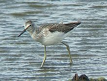
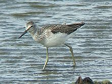

| Greenshank | |
|---|---|
|  | |
| Juvenile | |
| Conservation status | |
| Binomial name | |
| Tringa nebularia (Gunnerus, 1767) |
| Greenshank | |
|---|---|
|  | |
| Juvenile | |
| Conservation status | |
| Binomial name | |
| Tringa nebularia (Gunnerus, 1767) |
The Greenshank Tringa nebularia is a wader in the large family Scolopacidae, the typical waders. Its closest relative is the Greater Yellowlegs, together with which and the Spotted Redshank it forms a close-knit group. Among them, these three species show all the basic leg and foot colours found in the shanks, demonstrating that this character is paraphyletic (Pereira & Baker, 2005). They are also the largest shanks apart from the Willet, which is altogether more robustly built. The Greater Yellowlegs and the Greenshank share a coarse, dark, and fairly crisp breast pattern as well as much black on the shoulders and back in breeding plumage. This is a subarctic bird, breeding from northern Scotland eastwards across northern Europe and Asia. It is a migratory species, wintering in Africa, south Asia, and Australasia, usually on fresh water. It breeds on dry ground near marshy areas, laying about four eggs in a ground scrape.
Greenshanks are brown in breeding plumage, and grey-brown in winter. They have long greenish legs and a long bill with a grey base. They show a white wedge on the back in flight. They are somewhat larger than the related Common Redshank. The alarm call is a loud trisyllabic whistle.
Like most waders, they feed on small invertebrates, but will also take small fish.
The Greenshank is one of the species to which the Agreement on the Conservation of African-Eurasian Migratory Waterbirds (AEWA) applies.

{kind=link}
{kind=link}